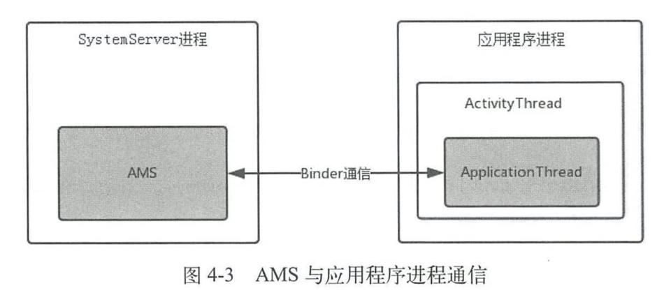

这里总结根Activity的启动过程。主要分为3个部分：Launcher请求AMS过程、AMS到ApplicationThread的调用过程和ActivityThread启动Activity。
1. Launcher请求AMS过程
一般情况下启动根Activity都是通过点击桌面的快捷图标，所以从这里当作入口。
桌面对应着类是Launcher，Launcher本身也是一个Activity：
public final class Launcher extends Activity
和一般启动Activity一样，Launcher启动应用程序时也会调用startActivity方法。
startActivity方法方法内部会获取AMS（运行在SystemServer进程）在本地的代理对象（IActivityTaskManager），并调用其startActivity方法。
由于Launcher和AMS处在不同的进程，所以这期间是通过跨进程通信进行交互。
2. AMS到ApplicationThread的调用过程
此时代码逻辑已经到了AMS中。
根Activity启动Intent的flag为FLAG_ACTIVITY_NEW_TASK，因此会创建一个新的TaskRecord，用来描述一个Activity任务栈。
然后获取Activity的启动进程，如果不存在就创建（见应用程序进程的创建）。
如果存在应用程序进程，就在应用程序进程中启动根Activity。
上述逻辑都是运行在AMS所在的SystemServer进程中，如果想要与目标应用程序进程通信，就需要跨进程通信。类似地，AMS也需要一个本地代理来与目标进程交互，这个对象就是ActivityThread的内部类ApplicationThread，它继承了IApplicationThread.Stub。

3. ActivityThread启动Activity的过程
此时逻辑就运行在应用程序进程中了。
3.1. 切到主线程
先调用ApplicationThread的scheduleLaunchActivity方法（ApplicationThread是ActivityThread的内部类）。将启动Activity的参数封装成ActivityClientRecord，然后通过sendMessage将消息发送出去。
上面说到AMS与应用程序进程是通过ApplicationThread进行跨进程通信，所以ApplicationThread本质是一个Binder，运行在Binder线程池。另外一个点，在应用程序进程创建完，会创建主线程消息循环处理对象H对象，并开启主线程消息循环。所以需要Handler将逻辑回调到主线程。
3.2. 预启动performLaunchActivity
启动Activity的一个核心方法：
//ActivityThread.java
private Activity performLaunchActivity(ActivityClientRecord r, Intent customIntent) {
//获取ActivityInfo
ActivityInfo aInfo = r.activityInfo;//ActivityInfo用于存储AndroidManifes设置的Activity和Receiver节点信息，比如Activity的theme和launchMode。
if (r.packageInfo == null) {
//获取APK的描述类LoadApk
r.packageInfo = getPackageInfo(aInfo.applicationInfo, r.compatInfo, Context.CONTEXT_INCLUDE_CODE);//获取APK的描述类LoadApk，应用程序进程在启动Activity的时候会将Activity所属的APK加载进来，LoadApk就是描述已加载的APK文件的。
}
ComponentName component = r.intent.getComponent();//获取要启动的Activity的ComponentName，在ComponentName类中保存了该Activity的包名和类名。
//创建要启动Activity的上下文。
ContextImpl appContext = createBaseContextForActivity(r);
Activity activity = null;
try {
java.lang.ClassLoader cl = appContext.getClassLoader();
//用类加载器来创建Activity的实例
activity = mInstrumentation.newActivity( cl, component.getClassName(), r.intent);
//。。。
} //。。。
try {
Application app = r.packageInfo.makeApplication(false, mInstrumentation);//创建Application，makeApplication内部会调用Application的onCreate方法。
//。。。
if (activity != null) {
//。。。
//初始化Activity
activity.attach(appContext, this, getInstrumentation(), r.token, r.ident, app, r.intent, r.activityInfo, title, r.parent, r.embeddedID, r.lastNonConfigurationInstances, config, r.referrer, r.voiceInteractor, window, r.configCallback);//这里调用Activity的attach方法初始化Activity，并会创建Window对象（PhoneWindow）与自身关联。
//。。。
if (r.isPersistable()) {
mInstrumentation.callActivityOnCreate(activity, r.state, r.persistentState);//这里调用Instrumentation的callActivityOnCreate方法来启动Activity。
} else {
mInstrumentation.callActivityOnCreate(activity, r.state);
}
}
}
//。。。
return activity;
}
上面最后一个注释调用了Instrumentation的callActivityOnCreate方法。
Instrumentation#callActivityOnCreate
public void callActivityOnCreate(Activity activity, Bundle icicle,
PersistableBundle persistentState) {
prePerformCreate(activity);
activity.performCreate(icicle, persistentState);
postPerformCreate(activity);
}
Activity#performCreate
final void performCreate(Bundle icicle, PersistableBundle persistentState) {
//。。。
if (persistentState != null) {
onCreate(icicle, persistentState);
} else {
onCreate(icicle);
}
//。。。
}
在performCreate会调用Activity的onCreate方法，这样根Activity就启动了，即应用程序启动了。
3.3. 小结
先梳理一些关键的类：
应用程序进程创建后会运行代表主线程的实例ActivityThread，它管理着当前应用程序进程的主线程。
ActivityClientRecord：启动Activity的参数
- H：应用程序进程中主线程的消息管理类。
- ActivityInfo：存储AndroidManifes设置的Activity和Receiver节点信息，比如Activity的theme和launchMode。
- LoadApk：应用程序进程在启动Activity的时候会将Activity所属的APK加载进来，LoadApk就是描述已加载的APK文件的。
- ComponentName：保存Activity的包名和类名。
- Instrumentation：主要用来监控应用程序和系统的交互。
然后梳理一下ActivityThread启动Activity的过程：
ApplicationThread将启动Activity的参数进行封装，并通知H消息管理类发送处理启动Activity的逻辑（因为ApplicationThread是一个Binder，方法运行在Binder池中，所以需要Handler将逻辑回调到主线程）。
然后根据参数创建Context对象，Activity对象和Application对象。
接着初始化Activity，并回调onCreate生命周期，至此应用程序启动了。
4. 根Activity启动过程中涉及的进程
根Activity启动过程中会涉及到四个进程：Zygote进程，Launcher进程，AMS所在进程（SystemServer），应用程序进程。关系如下：

首先Launcher进程向AMS请求创建根Activity，AMS会判断根Activity所需的应用程序进程是否存在并启动，如果不存在就会请求Zygote进程创建应用程序进程。应用程序进程启动后，AMS会请求创建应用程序进程并启动根Activity。
步骤2采用的是Socket通信，步骤1和步骤4采用的是Binder通信。
如果是普通Activity的话，启动过程只会涉及2个：AMS所在进程和应用程序进程。
5. 总结
- 应用进程调用startActivity方法。
- startActivity方法内部会获取AMS（运行在SystemServer进程）在应用进程的代理对象（IActivityTaskManager），并调用其startActivity方法。
- 此时逻辑到了AMS中。如果任务栈不存在，那么会创建一个新的TaskRecord，用来描述一个Activity任务栈。
- 如果Activity进程不存在，那么通过一个Socket通知Zygote进程。
- 当Zygote进程接收到AMS的请求时，根据请求参数来fork自身创建应用程序进程。
- 调用ActivityThread的main方法，并开启主线程的消息循环。
- Activity进程启动后，AMS通过ActivityThread的内部类ApplicationThread（继承了IApplicationThread.Stub）与应用进程交互。
- ApplicationThread将启动Activity的参数进行封装，并通知H消息管理类发送处理启动Activity的逻辑（因为ApplicationThread是一个Binder，方法运行在Binder池中，所以需要Handler将逻辑回调到主线程）。
- 然后在performLaunchActivity中创建Context对象，Activity对象和Application对象。
- 最后回调Activity的onCreate，Activity启动完毕。